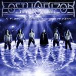

|
|
||
Lost Horizon : A Flame to the Ground Beneath (2003) |
|

http://www.oncelosthorizon.com |
1. Transdimensional Revelation 2:14 |
7.6/10 |
|
Lost Horizon, el grupo sueco cuyo debut, Awakening the World, fue sin duda de uno de los discos más aclamados del 2001, tiene un nuevo álbum titulado A Flame to the Ground Beneath. Contando con dos nuevos miembros, el Perspicacious Protector (teclados) y el Equilibrian Epicurius (guitarras), esta banda se ha movido con este nuevo álbum en los parámetros que sentó en el primero, power metal, doble bombo, algunos sonidos muy progresivos y una voz fantástica capaz tanto de partes muy melódicas como de gritos desgarradores. Sin embargo a este disco le falta algo de la fuerza, y de la creatividad que destilaba el primero. Tras una tétrica intro de sintetizador, marca de la casa, "Pure" surge con un riff pegadizo y un ritmo muy marcado, aunque algo lento. El mejor momento de la canción, que por cierto tarda en llegar, es el estribillo, donde la voz, con un ligero efecto de reverberación o similar, establece uno de los momentos más melódicos y memorables del disco. También se pueden destacar los solos de guitarra que, sin ser técnicamente espectaculares, encajan muy bien en la canción y le aportan algo que la voz no puede aportar. "Lost in the Depths of Me" tiene un tempo pulsante y de nuevo algo lento. Un gran trabajo en la voz, frecuentes cambios de ritmo y algunas buenas partes de guitarra no evitan que la canción se haga un poco larga. En "Again Will the Fire Burn" encontramos un tema más melodioso, de nuevo con cambios y una aportación más que positiva de las guitarras. Tras otro interludio de sintetizador, llega "Cry of a Restless Soul", un tema que comienza con una parte hablada, estilo Manowar, y que tiene algunos gritos realmente estremecedores. Además de esos detalles, un ritmo muy rápido, con frecuentes cambios, un estribillo brillante y emocionante y algunos solos de guitarra impecables, hacen de ésta una gran canción. El séptimo corte "Think not Forever", es de nuevo algo lento, y la base rítmica es demasiado previsible, aunque Daniel Heiman lleva su voz cerca del límite en ocasiones, lo que le da más vida. "Highlander" es un tema largo, épico, con partes variadas, gritos espectaculares y otra vez con un cierto aire a Manowar en algunas estrofas cargadas de rabia y de fuerza. Cierra este álbum "Deliverance", que es un tema de sintetizador, atmosférico y bastante minimalista. Si quitamos los tres temas de sintetizador, a este álbum le quedan seis canciones, algunas de ellas demasiado largas. Y aunque hay dos temas bastante buenos ("Pure" y "Cry of a Restless Soul") lo cierto es que no es suficiente para que el álbum se acerque a las cotas marcadas por el primero. Aunque técnicamente, tanto a los instrumentos como a la voz, este álbum es tan bueno, o mejor, que el anterior, le falta más variedad, y se echa de menos algún tema realmente rápido y contundente y algún otro estribillo de esos que se recuerdan la primera vez que los oyes. |
||
Rubén Béjar |
||